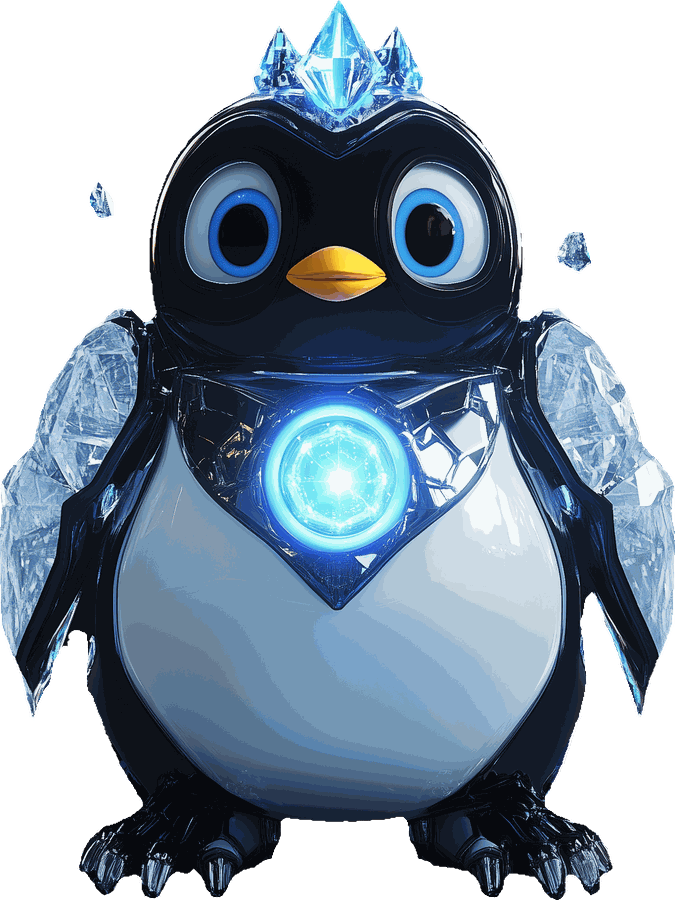

TEST
◆ ANALYZER READY
PROTOCOL: AI_IQ_v2

LIVE//DIAGNOSTIC
10 QUESTIONS · 2 MINUTES
The AI question 90% of
professionals get wrong
10 questions. 2 minutes. Find out where you stand — and how far you could go.
◆ NO SIGNUP · FREE · 2-MIN SCAN